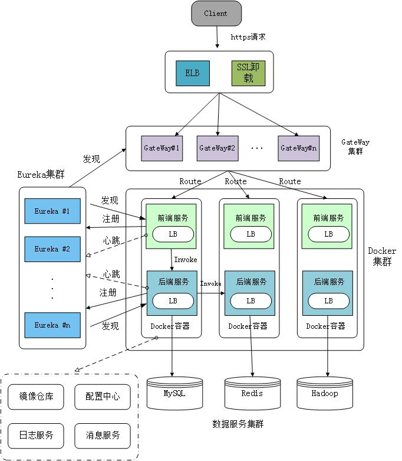

Kubernetes 下的微服务
传统的微服务

传统的微服务技术栈，典型的特征是需要一个服务注册中心。
每个服务启动时，主动注册自己的地址信息；当服务迁移时，主动变更服务的地址信息。
如果服务宕机，通常通过常驻程序拉起，常见的有 Supervisor、Systemd、PM2 等。
只是形式上的一组机器组成集群，并不具备集群的管理、调度能力。
Kubernetes 下的微服务

- 服务发现
Kubernetes 集群通过 Service 和 Endpoint 主动帮助服务进行注册，并维护可用的地址列表。
在 Kubernetes 下，Service 是一个抽象的概念，它可以代表一个单独的服务，也可以代表一组服务。
Service 使用 Label Selector 来选择一组 Pod，这些 Pod 通常是同一个服务的多个实例；使用 Cluster IP 来代表这组 Pod，它是一个虚拟的 IP 地址，不同于 Pod 的 IP 地址，它不会随着 Pod 的变化而变化。
- 负载均衡
当 Service 收到请求时，会通过内置的负载均衡器，将请求转发到其中一个 Pod 上。
默认的负载均衡策略是轮询，也可以通过配置修改为随机。修改方式是在 Service 的配置中，添加 sessionAffinity: ClientIP。